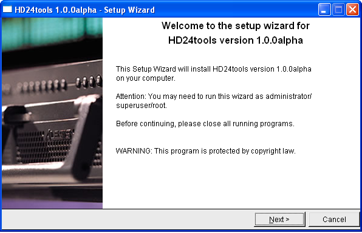

The recommended way of installing HD24tools on Windows is by using the graphical installer. The .zip file that you downloaded contains a file called setup.exe, which, when run, will install everything that is needed to run HD24tools.
When setup is started, it will display a screen similar to the following*:
Click Next to continue; you will now be taken to the license agreement. This license agreement is pretty liberal: you are allowed to use the program free of charge and spread unaltered copies of it (although it would be recommended to download directly from the HD24tools website). You are encouraged to donate to the development of HD24tools if you find the program useful. To continue, accept the terms in the license agreement and click Next.
You will then be asked where to install the program files. The suggested installation directory will be fine for most practical purposes. Unless you have specific wishes about the folder where you want HD24tools to be installed, the default should be fine. You may want to write down the installation folder at this moment for future reference- you will need to know where the program is installed to run it.
After clicking Next again, the files will be copied to the given location.
Note: HD24tools is quite light, so copying the files will take a very small amount of time, sometimes under a second. This is normal.
After installation is complete, open an explorer window and write the installation directory in the address bar (typically C:\HD24tools). After going to that folder, you can start HD24connect by double-clicking it.
To uninstall HD24tools, simply delete the directory in which it was installed.
* The version number displayed may differ from the screenshot above.